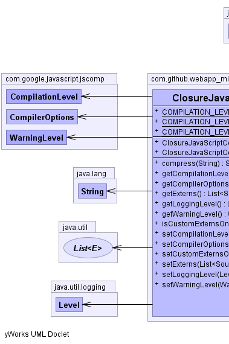
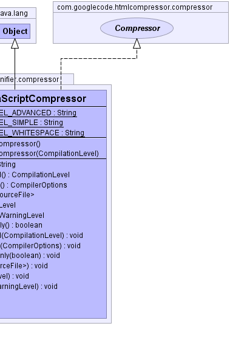

public class ClosureJavaScriptCompressor extends Object implements com.googlecode.htmlcompressor.compressor.Compressor
HtmlCompressor for inline JavaScript compression.
NOTE: This class has been modified from the original to work with newer versions of the Closure Compiler.
HtmlCompressor.setJavaScriptCompressor(Compressor),
Google Closure Compiler|  |  |
| Modifier and Type | Field and Description |
|---|---|
static String |
COMPILATION_LEVEL_ADVANCED |
static String |
COMPILATION_LEVEL_SIMPLE |
static String |
COMPILATION_LEVEL_WHITESPACE |
| Constructor and Description |
|---|
ClosureJavaScriptCompressor() |
ClosureJavaScriptCompressor(com.google.javascript.jscomp.CompilationLevel compilationLevel) |
| Modifier and Type | Method and Description |
|---|---|
String |
compress(String source) |
com.google.javascript.jscomp.CompilationLevel |
getCompilationLevel()
Returns level of optimization that is applied when compiling JavaScript code.
|
com.google.javascript.jscomp.CompilerOptions |
getCompilerOptions()
Returns options that are used by the Closure compiler.
|
List<com.google.javascript.jscomp.SourceFile> |
getExterns()
Returns
SourceFile used as a reference during the compression at
CompilationLevel.ADVANCED_OPTIMIZATIONS level. |
Level |
getLoggingLevel()
Returns logging level used by the Closure compiler.
|
com.google.javascript.jscomp.WarningLevel |
getWarningLevel()
Returns
WarningLevel used by the Closure compiler |
boolean |
isCustomExternsOnly()
Returns
true if default externs defined inside Closure's jar are ignored and only
user defined ones are used. |
void |
setCompilationLevel(com.google.javascript.jscomp.CompilationLevel compilationLevel)
Sets level of optimization that should be applied when compiling JavaScript code.
|
void |
setCompilerOptions(com.google.javascript.jscomp.CompilerOptions compilerOptions)
Sets options that will be used by the Closure compiler.
|
void |
setCustomExternsOnly(boolean customExternsOnly)
If set to
true, default externs defined inside Closure's jar will be ignored and
only user defined ones will be used. |
void |
setExterns(List<com.google.javascript.jscomp.SourceFile> externs)
Sets external JavaScript files that are used as a reference for function declarations if
CompilationLevel.ADVANCED_OPTIMIZATIONS compression level is used. |
void |
setLoggingLevel(Level loggingLevel)
Sets logging level for the Closure compiler.
|
void |
setWarningLevel(com.google.javascript.jscomp.WarningLevel warningLevel)
Indicates the amount of information you want from the compiler about possible problems in your
code.
|
public static final String COMPILATION_LEVEL_SIMPLE
public static final String COMPILATION_LEVEL_ADVANCED
public static final String COMPILATION_LEVEL_WHITESPACE
public ClosureJavaScriptCompressor()
public ClosureJavaScriptCompressor(com.google.javascript.jscomp.CompilationLevel compilationLevel)
public String compress(String source)
compress in interface com.googlecode.htmlcompressor.compressor.Compressorpublic com.google.javascript.jscomp.CompilationLevel getCompilationLevel()
CompilationLevel that is applied when compiling JavaScript code.public void setCompilationLevel(com.google.javascript.jscomp.CompilationLevel compilationLevel)
CompilationLevel.SIMPLE_OPTIMIZATIONS will be used by default.
Warning: Using CompilationLevel.ADVANCED_OPTIMIZATIONS could break inline
JavaScript if externs are not set properly.
compilationLevel - Optimization level to use, could be set to
CompilationLevel.ADVANCED_OPTIMIZATIONS,
CompilationLevel.SIMPLE_OPTIMIZATIONS,
CompilationLevel.WHITESPACE_ONLYpublic com.google.javascript.jscomp.CompilerOptions getCompilerOptions()
CompilerOptions that are used by the compilerpublic void setCompilerOptions(com.google.javascript.jscomp.CompilerOptions compilerOptions)
new CompilerOptions().compilerOptions - CompilerOptions that will be used by the compilerpublic Level getLoggingLevel()
Level of logging used by the Closure compilerpublic void setLoggingLevel(Level loggingLevel)
loggingLevel - logging level for the Closure compiler.Levelpublic List<com.google.javascript.jscomp.SourceFile> getExterns()
SourceFile used as a reference during the compression at
CompilationLevel.ADVANCED_OPTIMIZATIONS level.SourceFile used as a reference during compressionpublic void setExterns(List<com.google.javascript.jscomp.SourceFile> externs)
CompilationLevel.ADVANCED_OPTIMIZATIONS compression level is used.
A number of default externs defined inside Closure's jar will be used besides user defined
ones, to use only user defined externs set setCustomExternsOnly(true)
Warning: Using CompilationLevel.ADVANCED_OPTIMIZATIONS could break inline
JavaScript if externs are not set properly.
externs - SourceFile to use as a reference during compressionsetCompilationLevel(CompilationLevel),
setCustomExternsOnly(boolean),
Advanced
Compilation and Externs,
SourceFilepublic com.google.javascript.jscomp.WarningLevel getWarningLevel()
WarningLevel used by the Closure compilerWarningLevel used by the Closure compilerpublic void setWarningLevel(com.google.javascript.jscomp.WarningLevel warningLevel)
public boolean isCustomExternsOnly()
true if default externs defined inside Closure's jar are ignored and only
user defined ones are used.true if default externs defined inside Closure's jar are ignored and only
user defined ones are usedpublic void setCustomExternsOnly(boolean customExternsOnly)
true, default externs defined inside Closure's jar will be ignored and
only user defined ones will be used.customExternsOnly - true to skip default externs and use only user defined onessetExterns(List),
setCompilationLevel(CompilationLevel)Copyright © 2013–2015. All rights reserved.